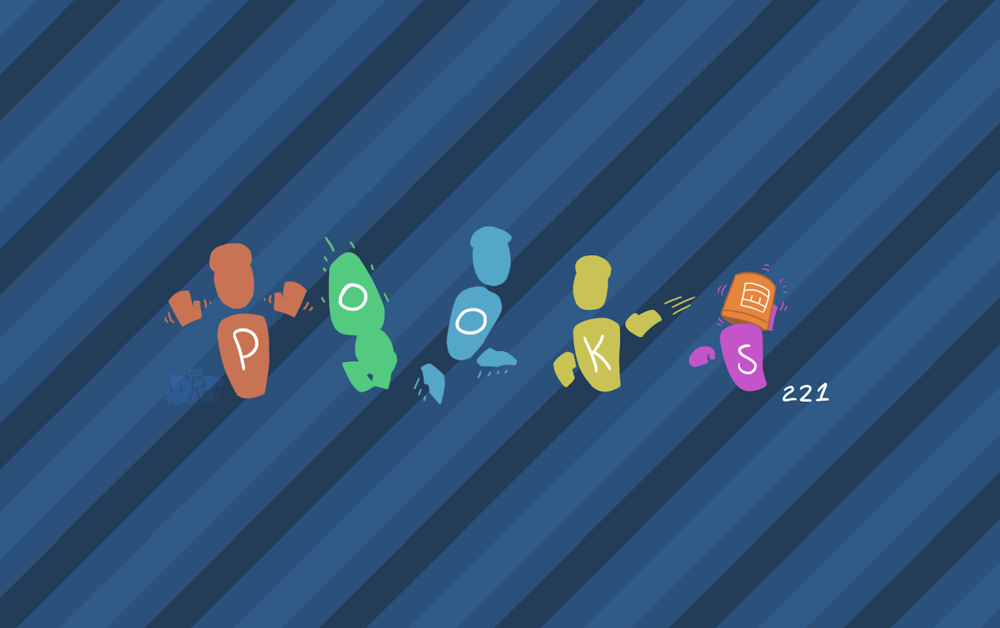

> open file: about
About me
Social community management for a new generation.

I'm a community and social media manager with over 5 years of experience building and leading gaming communities, especially for Gen Z and Gen Alpha. I specialize in trend-driven content, fast community engagement, and cross-platform strategy that feels authentic and current.
From managing Discord servers with thousands of active members to producing in-game events and updates with over 15 million visits in Rec Room, I've built communities that stick. I've worked with studios including Animal Company, Rec Room and Kluge Interactive (with Meta), combining creative content with hands-on QA, live ops and VR event production.
Service record
Marketing Specialist and QA Tester · Kluge Interactive
Marketing: May 2024 to Oct 2026
- Built a Roblox-to-Discord retention system that grew the community 120%+ in one month.
- Posted 3+ times a week across the major platforms for the studio's games.
- Wrote go-to-market plans for Roblox and Meta Horizon Worlds titles.
- Ran creator and influencer outreach and paid campaigns.
- Built weekly Metricool performance reports for the studio's channels.
- Wrote patch notes for every Roblox title, and did QA testing for VR and flatscreen builds.
Accounts: @heykluge · @klugegameslegacy
Community Manager · Animal Company VR
Contract with Wooster Games, May to Jul 2025
- Managed a Discord of 300,000+ members and restructured its channels.
- Set up incentives for a volunteer moderation team of 15+.
- Live-streamed developer Q&As with OBS, moderated the game's Reddit, and ran weekly events.
Co-Manager · IconINK
Contract studio for Rec Room, Jul 2021 to May 2024
- Co-ran a contract studio for Rec Room with five clients (the work came through Rec Room).
- Held client meetings and feedback loops, and produced the Rec Rocks concert and the AJR virtual ride.
- QA across 10+ contracted projects, including the AJR crash fix (Quest, iOS, Android, Unity URP).
- Led two teams of 10 volunteer moderators across time zones, with written triage protocols.
- Ran the studio's social channels and website.
Event host and room builder · Rec Room
5+ years
- Ran some of Rec Room's top social hangout spaces, with 15M+ collective room visits.
- Hosted live trivia with up to 300 players at once.